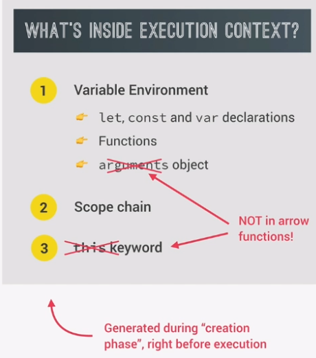

After the code is compiled, a Global Execution Context is created for top-level-code to be executed.
Top-level-code is code that is NOT inside a function.
Code inside a function is ony executed when called.
There is only one global execution content (EC).
For each new function call, a new EC is created.
let, const, and var declarations
functions
argumetns object
Reference to variables outside the current function.
###
The above happens during a "creation phase" right before execution.
NOTE: Execution Contexts belonging to arrow functions DO NOT get their own arguments object or 'this' keyword.
Instead, they can use the arguments object and 'this' keyword from their parent.
